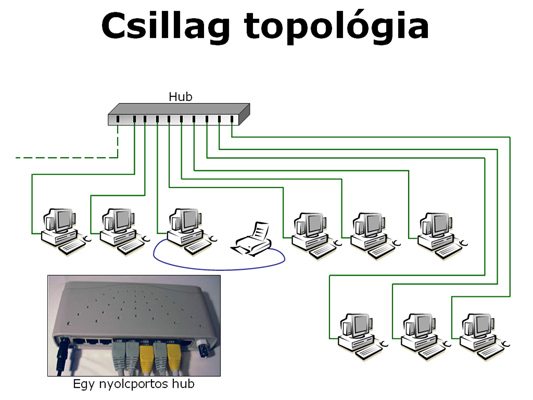
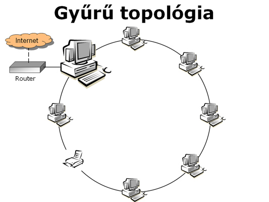
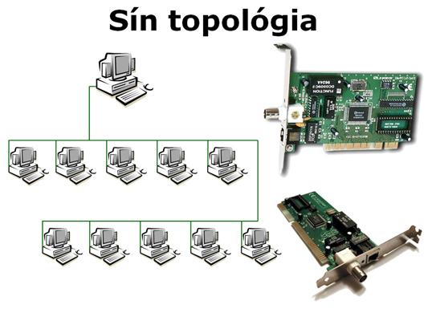

A vezetékes hálózatok
Hálózatok csoportosítása összekötés szerint
A hálózatokat többféle módon csoportosíthatjuk, az egyik csoportosítási szempont a gépek összeköttetési módja lehet. E téren megkülönböztethetünk pl. vezetékes és vezeték nélküli (wireless) hálózatokat. Vezetékes hálózatok esetében az átviteli közeg valamilyen fémkábel vagy fényvezető szál lehet, míg vezeték nélküli technológia esetén az átviteli közeg a levegő.
Vezetékes hálózatok
- Néhány éve még a lokális hálózatok ( LAN) építésekor a legjellemzőbb vezetéktípus a koaxiális kábel volt.
- A hálózatokhoz használt koaxiális kábel (röviden koaxkábel) felépítésében hasonlít a tévéhez csatlakoztatott antennavezetékhez.
- Ezt a vezetéktípust jellemzően a sín topológiájú hálózatokhoz alkalmazzák.
- Előnye, hogy viszonylag kevés vezetékkel köthetők össze a gépek, viszont a vezeték sérülése a teljes hálózatot működésképtelenné teszi.
- A vezetékes összeköttetésű lokális hálózatok (LAN) ma is jellemző másik vezetéktípusa a csavart érpár (UTP, STP).
- Ez lehet árnyékolatlan (UTP) vagy árnyékolt (STP), és leginkább a telefonzsinórhoz hasonlít, pontosabban a telefonzsinór is egy bizonyos fajta csavart érpár.
- Ma már Magyarországon sem számít ritkaságnak a fényvezető, másképpen optikai szálak alkalmazása a hálózatok esetében. Ez a technológia egyaránt használható lokális (LAN) és kiterjedt (MAN és WAN) hálózatok esetében is.
- Ez a technológia alkalmas a legnagyobb átviteli sebesség megvalósítására, ezért ha a jövőben a vezetékes hálózatok megőrzik helyüket a számítástechnikában, várhatóan ez az eljárás fog a leginkább fejlődni.
| Csillag topológia |
 |
| Gyűrű topológia |
 |
| Sín topológia |
 |
További információkért kattintson ide !
Veték nélküli hálózatokrol ide kattintva olvashat.